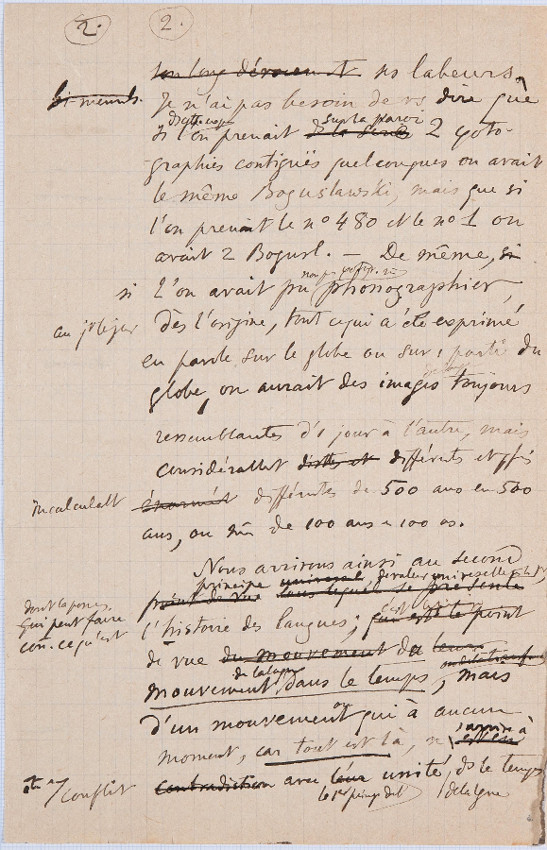
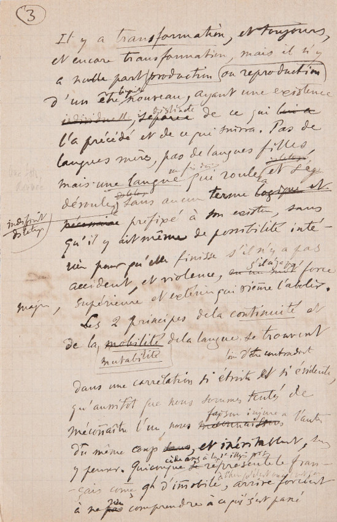

<!DOCTYPE HTML><html xmlns="http://www.w3.org/1999/xhtml" xmlns:tei="http://www.tei-c.org/ns/1.0">
   <head>
      <meta http-equiv="Content-Type" content="text/html; charset=UTF-8"><script src="javascript.js"></script><link rel="stylesheet" type="text/css" href="stile.css">
      <title>"Trois premières conférences à l'Université (cours d'ouverture, novembre 1891)" di Ferdinand De Saussure: versione elettronica</title>
   </head>
</html><body xmlns="http://www.w3.org/1999/xhtml" xmlns:tei="http://www.tei-c.org/ns/1.0">
   <div id="titolo">
      <h1>"Trois premières conférences à l'Université (cours d'ouverture, novembre 1891)" di
         Ferdinand De Saussure: versione elettronica</h1><br><h2> 
         Manoscritto originale di: Ferdinand De Saussure <br>Edizione francese a cura di: Simon Bouquet, Rudolf Engler<br>Traduzione italiana a cura di: Emanuele Fadda<br>Codifica TEI a cura di: Maria Riso<br></h2><br></div>
   <div id="istruzioni">
      <h3>Istruzioni per la corretta fruizione della versione elettronica</h3>
      <p>
         I vari interventi effettuati da Ferdinand De Saussure sul manoscritto originale sono
         stati messi 
         in evidenza usando diversi colori e segni grafici.<br>
         Per facilitare la lettura, le abbreviazioni sono state espanse. 
         Posizionando il cursore sulla parola è possibile 
         leggere la corrispettiva abbreviazione 
         (esempio: <span class="abbr" hoverText="abbr">abbreviazione</span>). <br>
         Le parole aggiunte dall'autore sono di colore rosso 
         (esempio: <span class="add">aggiunta</span>). <br>
         Le parole cancellate dall'autore sono barrate  
         (esempio: <del>parole cancellate</del>); quando la parola cancellata non è chiaramente leggibile, è sostituita da "undefined"
         
         (esempio: <del>undefined</del>). <br>
         Le parole sottolineate dall'autore sono sottolineate anche nel testo trascritto
         (esempio: <u>sottolineatura</u>). <br>
         Le note sono evidenziate in rosso (esempio: <a class="noteLista">n</a>). Cliccando sulla n nel testo si potrà visualizzare la relativa nota. <br>
         Infine, gli elementi terminologici sono evidenziati in giallo 
         (esempio: 
         <term>elemento terminologico</term>). Cliccando sul termine si potrà visualizzare la relativa definizione nel glossario.
         <br>
         Cliccando su un punto qualsiasi dell'immagine si verrà rimandati alla riga corrispondente
         nel testo. 
         </p>
   </div><br><div id="navBar">
      <ul id="menu">
         <li><a href="#pag2">Pagina 2</a></li>
         <li><a href="#pag3">Pagina 3</a></li>
         <li><a href="#manoscritto">Informazioni sul manoscritto</a></li>
         <li><a href="#codifica">Informazioni sulla codifica</a></li>
      </ul>
   </div><br><div id="pag2">
      <h2 class="inizioPag">PAGINA 2</h2>
      <div class="immagini"><map name="map2"><area shape="rect" coords="59,9,117,58" href="##PrimoNum2"><area shape="rect" coords="145,5,200,52" href="##SecondoNum2"><area shape="rect" coords="144,53,539,96" href="##L1_pg2"><area shape="rect" coords="44,86,542,113" href="##L2_pg2"><area shape="rect" coords="147,117,520,150" href="##L3_pg2"><area shape="rect" coords="140,149,546,179" href="##L4_pg2"><area shape="rect" coords="147,176,534,210" href="##L5_pg2"><area shape="rect" coords="145,209,533,240" href="##L6_pg2"><area shape="rect" coords="151,244,531,268" href="##L7_pg2"><area shape="rect" coords="111,272,521,307" href="##L8_pg2"><area shape="rect" coords="49,312,528,339" href="##L9_pg2"><area shape="rect" coords="137,343,544,371" href="##L10_pg2"><area shape="rect" coords="148,375,539,409" href="##L11_pg2"><area shape="rect" coords="151,422,537,449" href="##L12_pg2"><area shape="rect" coords="150,452,540,477" href="##L13_pg2"><area shape="rect" coords="27,481,538,518" href="##L14_pg2"><area shape="rect" coords="139,520,471,547" href="##L15_pg2"><area shape="rect" coords="196,553,524,571" href="##L16_pg2"><area shape="rect" coords="138,575,545,604" href="##L17_pg2"><area shape="rect" coords="12,602,535,639" href="##L18_pg2"><area shape="rect" coords="146,644,489,661" href="##L19_pg2"><area shape="rect" coords="144,670,545,703" href="##L20_pg2"><area shape="rect" coords="136,710,516,729" href="##L21_pg2"><area shape="rect" coords="157,739,528,762" href="##L22_pg2"><area shape="rect" coords="16,769,540,823" href="##L23_pg2"></map></div>
      <div class="testo">
         <h3>Testo</h3>2. &nbsp;
         2. &nbsp;
         
         <p><br><span id="#L1_pg2">
               &gt; 
               </span><del>
               undefined
               </del>ses labeurs , <br><span id="#L2_pg2">
               &gt; 
               </span><del class="add">
               undefined
               </del>Je n'ai pas besoin de <span class="abbr" hoverText="vs">vous </span>dire que <br><span id="#L3_pg2">
               &gt; 
               </span>si <span class="abbrSottoAdd" hoverText="ds">dans </span><span class="add">cette </span><span class="abbrSottoAdd" hoverText="expo">exposition </span><a class="noteLista" href="#n1">n1</a>l'on prenait <del>ds la  </del><del>
               undefined
               </del><span class="add">sur la paroi </span>2 <a href="#photographies">photo </a>- <br><span id="#L4_pg2">
               &gt; 
               </span>- <a href="#photographies">graphies </a>contiguës quelconques on avait <br><span id="#L5_pg2">
               &gt; 
               </span>le même Boguslawski,  mais que si <br><span id="#L6_pg2">
               &gt; 
               </span>l'on prenait le n° 480 et le n° 1 on <br><span id="#L7_pg2">
               &gt; 
               </span>avait 2  <span class="abbr" hoverText="Bogusl.">Boguslawski </span>_ De même , <del>si </del><br><span id="#L8_pg2">
               &gt; 
               </span><span class="add">si </span>l'on avait pu <span class="add">non pas </span><a class="termAddAbbr" hoverText="photog" href="#photographier">photographier </a><span class="abbrSottoAdd" hoverText="m">mais </span><a href="#phonographier">phonographier </a>, <br><span id="#L9_pg2">
               &gt; 
               </span><span class="add">au </span><span class="abbrSottoAdd" hoverText="jr">jour </span><span class="add">le </span><span class="abbrSottoAdd" hoverText="jo">jour </span>dès l' <a href="#origine">origine </a>, tout ce qui a été exprimé <br><span id="#L10_pg2">
               &gt; 
               </span>en <a href="#parole">parole </a>sur le globe ou sur 1  partie du <br><span id="#L11_pg2">
               &gt; 
               </span>globe , on aurait des <a href="#images">images </a><a class="termSottoAdd" href="#images">
               de langue
                </a>toujours <br><span id="#L12_pg2">
               &gt; 
               </span>ressemblantes d'1 jour à l'autre, mais <br><span id="#L13_pg2">
               &gt; 
               </span><span class="abbr" hoverText="considérablem">considérablement </span><del> et </del><del>
               undefined
               </del>différentes et <span class="abbr" hoverText="pfis">parfois </span><br><span id="#L14_pg2">
               &gt; 
               </span><del>énormé </del><del>
               undefined
               </del><span class="abbrSottoAdd" hoverText="incalculabl">incalculablement </span>différentes de 500 ans en 500 <br><span id="#L15_pg2">
               &gt; 
               </span>ans , ou <span class="abbr" hoverText="mê">même </span>de 100 ans <span>à </span>100 <span>ans </span>. <br><span id="#L16_pg2">
               &gt; 
               </span>Nous arrivons ainsi au second <br><span id="#L17_pg2">
               &gt; 
               </span><del>point de vue, dans le quel se presente </del><a class="termSottoAdd" href="#principe">principe </a><del class="add">universal </del>, <span class="add"> de </span><a class="termSottoAdd" href="#valeur">valeur universelle </a><span class="abbrSottoAdd" hoverText="c">comme </span><span class="add">le 1er </span>, <br><span id="#L18_pg2">
               &gt; 
               </span><span class="add">dont la </span><span class="abbrSottoAdd" hoverText="posses">possession </span><del class="add">qui </del><span class="add">peut faire </span><span class="abbrSottoAdd" hoverText="con.">connaître </span><span class="add">ce qu'est </span><a href="#histoire">l'histoire des langues </a>; <del>qui est le point </del><span class="add">c'est le </span><a class="termSottoAdd" href="#pdv">point </a><br><span id="#L19_pg2">
               &gt; 
               </span><a href="#pdv">
               de vue
                </a><del>du mouvement </del>d <del>e </del><span class="add">u </span><del>
               undefined
               </del><br><span id="#L20_pg2">
               &gt; 
               </span><a href="#mouvement"><u>
                  mouvement
                   </u></a><a class="termSottoAdd" href="#mouvement">de la </a><a class="termSottoAdd" href="#mouvement">langue </a><a href="#mouvement"><u>
                  dans le temps
                   </u></a><del class="add">ou de </del><del class="add">
               undefined
               </del>, mais <br><span id="#L21_pg2">
               &gt; 
               </span>d'un mouvement qui à aucun <br><span id="#L22_pg2">
               &gt; 
               </span>moment , <u>car tout est là </u><a class="noteLista" href="#n2">n2</a>, n <del>est en </del><span class="add">'arrive à </span><br><span id="#L23_pg2">
               &gt; 
               </span><del>contradiction </del><span class="abbrSottoAdd" hoverText="et">être </span><span class="add">en conflit </span>avec <del> </del><del>
               undefined
               </del><span class="add">le 1er  </span><a class="termSottoAdd" href="#principe">principe </a><span class="add">de l' </span><a href="#unite">unité </a><a class="termSottoAdd" href="#unite">de la </a><a class="termAddAbbr" hoverText="lgue" href="#unite">langue </a><a class="termSottoAbbr" hoverText="ds" href="#unite">dans </a><a href="#unite">le temps </a></p>
      </div>
      <div class="trad"><input type="button" class="yes" id="mostraTrad2" value="Mostra traduzione"><input type="button" class="no" id="nascondiTrad2" value="Nascondi traduzione"><div class="no" id="trad2">
            <h3>Traduzione</h3>
            <p>sue fatiche.
               Non ho bisogno di dirvi che,
               se in quest'esposizione si prendessero due fotografie 
               contigue qualsiasi sulla parete, si avrebbe 
               lo stesso Boguslawski, ma se 
               si prendessero la n° 480 e la n° 1 si
               avrebbero due Boguslawski.
               
               Ugualmente,
               se si fosse potuto non fotografare, ma fonografare
               giorno per giorno dall'origine tutto ciò che è stato espresso
               verbalmente sul pianeta o su una parte di 
               esso, si avrebbero delle immagini di lingua sempre
               rassomigliantisi da un giorno all'altro, ma
               considerevolmente differenti e a volte
               differenti in modo incalcolabile di 500 in 500
               anni, o anche di 100 in 100 anni.
               
               Arriviamo così al secondo
               principio, di valore universale come il primo,
               il cui possesso può far conoscere quel che è la storia delle lingue; è il punto
               di vista del
               movimento della lingua nel tempo, ma
               di un movimento che a nessun
               momento, giacché tutto è lì, arriva ad
               essere in conflitto col primo principio dell'unità della lingua nel tempo.
               </p>
         </div>
      </div>
   </div>
   <div id="glossario2"><br><h3>Glossario:</h3>
      <ul>
         <li>
            <term id="photographies">Photographie</term>:
            
            immagine positiva ottenuta con particolari apparecchi e processi chimico-fisici.
            </li>
         <li>
            <term id="photographier">Photographier</term>:
            
            riprendere e riprodurre per mezzo della fotografia.
            </li>
         <li>
            <term id="phonographier">Phonographier</term>:
            
            registrare i suoni di una lingua.
            </li>
         <li>
            <term id="origine">Origine</term>:
            
            inizio della storia dell'uomo sulla Terra.
            </li>
         <li>
            <term id="parole">Parole</term>:
            
            atto dell'individuo che realizza la sua facoltà di linguaggio 
            per mezzo della convenzione sociale che è la lingua.
            </li>
         <li>
            <term id="images">Image de langue</term>:
            
            manifestazione della lingua in un preciso momento.
            </li>
         <li>
            <term id="principe">Principe</term>:
            
            definizione, aforisma.
            </li>
         <li>
            <term id="valeur">Valeur universelle</term>:
            
            che riguarda l’umanità intera, che è valido per tutti gli uomini, e quindi per tutte
            le lingue.
            </li>
         <li>
            <term id="histoire">Histoire des langues</term>:
            
            descrizione diacronica delle trasformazioni che le lingue hanno conosciuto nel tempo.
            </li>
         <li>
            <term id="pdv">Point de vue</term>:
            
            posizione da cui si osserva, anche in senso figurato.
            </li>
         <li>
            <term id="mouvement">Mouvement de la langue dans le temps</term>:
            
            evoluzione di una lingua nel corso del tempo.
            </li>
         <li>
            <term id="unite">Unité de la langue dans le temps</term>:
            
            la lingua conserva la sua unità nel corso del tempo nonostante l'evoluzione che la
            caratterizza.
            </li>
      </ul>
   </div>
   <div id="note2">
      <h3>Note:</h3>
      <ul>
         <li>
            <note id="n1" class="noteLista">n1</note>: 
            
            Nella pagina precedente dei suoi appunti, Ferdinand De Saussure scrive: 
            "Un tipo originale di nome Boguslawski 
            ha ultimamente annunciato in una città della Russia, l’apertura di un’esposizione
            di nuovo genere: 
            si trattava semplicemente di 480 ritratti fotografici rappresentanti tutti la stessa
            persona, cioè 
            lo stesso Boguslawski, e sempre nella stessa posa. Da vent’anni, con regolarità ammirevole,
            il primo 
            e il quindici di ogni mese, quest’uomo votato alla scienza si recava dal suo fotografo,
            e si trovava ora 
            in condizione di far godere il pubblico del frutto accumulato delle sue fatiche."
            Non si hanno altre notizie dell'artista e dell'esposizione citati da Saussure, pertanto
            è difficile collocarli nel tempo.
            </li>
         <li>
            <note id="n2" class="noteLista">n2</note>: 
            
            Che cosa vuol dire Saussure con quest'espressione (che richiama vagamente la massima
            wittgensteiniana: non pensare: guarda)?
            Probabilmente, si tratta proprio di un richiamo al fatto che tutto ciò che il linguista
            deve considerare, lo ha già
            dinanzi agli occhi - ed è paradossale, ma evidente.
            </li>
      </ul>
   </div><br><div id="pag3">
      <h2 class="inizioPag">PAGINA 3</h2>
      <div class="immagini"><map name="map3"><area shape="rect" coords="23,2,80,47" href="##Num3"><area shape="rect" coords="89,42,542,82" href="##L1_pg3"><area shape="rect" coords="81,79,530,104" href="##L2_pg3"><area shape="rect" coords="89,111,537,138" href="##L3_pg3"><area shape="rect" coords="68,145,546,176" href="##L4_pg3"><area shape="rect" coords="96,178,528,203" href="##L5_pg3"><area shape="rect" coords="92,207,529,227" href="##L6_pg3"><area shape="rect" coords="92,243,513,261" href="##L7_pg3"><area shape="rect" coords="8,278,515,300" href="##L8_pg3"><area shape="rect" coords="99,310,542,336" href="##L9_pg3"><area shape="rect" coords="101,340,522,368" href="##L10_pg3"><area shape="rect" coords="101,377,548,395" href="##L11_pg3"><area shape="rect" coords="106,409,529,433" href="##L12_pg3"><area shape="rect" coords="111,446,547,460" href="##L13_pg3"><area shape="rect" coords="28,473,541,499" href="##L14_pg3"><area shape="rect" coords="133,506,532,530" href="##L15_pg3"><area shape="rect" coords="102,533,544,591" href="##L16_pg3"><area shape="rect" coords="111,603,546,636" href="##L17_pg3"><area shape="rect" coords="112,644,517,666" href="##L18_pg3"><area shape="rect" coords="109,678,536,705" href="##L19_pg3"><area shape="rect" coords="112,716,544,737" href="##L20_pg3"><area shape="rect" coords="106,744,543,766" href="##L21_pg3"><area shape="rect" coords="110,780,544,807" href="##L22_pg3"><area shape="rect" coords="115,813,504,845" href="##L23_pg3"></map></div>
      <div class="testo">
         <h3>Testo</h3>3
         <p><br><span id="#L1_pg3">
               &gt; 
               </span>Il y a <a href="#transformation"><u>transformation </u></a>, et toujours , <br><span id="#L2_pg3">
               &gt; 
               </span>et encore <a href="#transformation">transformation </a>, mais il n'y <br><span id="#L3_pg3">
               &gt; 
               </span>a nulle part <a href="#reproduction">reproduction </a>ou <a href="#production">production </a><br><span id="#L4_pg3">
               &gt; 
               </span>d'un <a href="#etre">être </a><a class="termAddAbbr" hoverText="linguist" href="#etre">linguistique </a><a href="#etre">nouveau </a>, ayant une existence <br><span id="#L5_pg3">
               &gt; 
               </span><del>individuelle </del><del>separee </del><span class="add">distincte </span>de ce qui <del>lui a </del><br><span id="#L6_pg3">
               &gt; 
               </span>l'a précédé et de ce qui suivra <a class="noteLista" href="#n3">n3</a>. Pas de <br><span id="#L7_pg3">
               &gt; 
               </span><a href="#meres">langues </a><a class="termSottoAbbr" hoverText="mèrs" href="#meres">mères </a>, pas de <a href="#filles">langues filles </a>, <br><span id="#L8_pg3">
               &gt; 
               </span><del>
               une fois donnée
                </del>mais <u>une <a href="#langue">langue </a></u><span class="abbrSottoAdd" hoverText="un fis don">une fois donnée </span>qui roule <span class="add">ra </span><del class="add">
               undefined
               </del>et se <del>g </del><br><span id="#L9_pg3">
               &gt; 
               </span>déroule <span class="add">ra </span><del class="add">
               ds le temps    
                </del><span class="abbrSottoAdd" hoverText="indefinim">indefiniment </span><span class="abbrSottoAdd" hoverText="ds">dans </span><span class="add">le </span><a class="termSottoAdd" href="#temps">temps </a>sans aucun <a href="#terme">terme </a><del> et </del><del>
               undefined
               </del><br><span id="#L10_pg3">
               &gt; 
               </span><del>
               undefined
               </del>prefixé à son <span class="abbr" hoverText="existen">existence </span>, sans <br><span id="#L11_pg3">
               &gt; 
               </span>qu'il y ait même de possibilité inté - <br><span id="#L12_pg3">
               &gt; 
               </span><span class="abbr" hoverText="rie">rieure </span>pour qu'elle finisse <a class="noteLista" href="#n4">n4</a>s'il n'y a pas <br><span id="#L13_pg3">
               &gt; 
               </span>accident ,  et violence , <del>en  </del><del>
               undefined
               </del><span class="add">s'il n'y a pas </span>force <br><span id="#L14_pg3">
               &gt; 
               </span><span class="abbrSottoAdd" hoverText="maj">majeure </span>, superieure et <span class="abbr" hoverText="exterie">exterieure </span>qui vienne l'abolir . <br><span id="#L15_pg3">
               &gt; 
               </span>Ces 2  <a href="#principe2">principes </a><span>de la </span><a href="#continuite"><u>continuité </u></a>et <br><span id="#L16_pg3">
               &gt; 
               </span>de la <del>mobilité </del><u><a href="#mutabilite" class="termSottoAdd">mutabilité
                  </a></u><span>de la </span><a href="#langue">langue </a><a class="noteLista" href="#n5">n5</a><span class="add">loin d'être </span><a class="termAddAbbr" hoverText="contradict" href="#contradictoires">contradictoires </a>se trouvent <br><span id="#L17_pg3">
               &gt; 
               </span>dans une <a href="#correlation">correlation </a>si étroite et si évidente , <br><span id="#L18_pg3">
               &gt; 
               </span>qu'aussitôt que nous sommes tentés de <br><span id="#L19_pg3">
               &gt; 
               </span>méconnaître l'un , nous <del>meconnai </del><del>
               undefined
               </del><span class="abbrSottoAdd" hoverText="faison">faisons </span><span class="add">injure a </span>l' <span class="abbr" hoverText="autr">autre </span><br><span id="#L20_pg3">
               &gt; 
               </span>du même coup <del>dans </del>, et <span class="abbr" hoverText="inévitablnt">inévitablement </span><span class="abbr" hoverText="sns">sans </span><br><span id="#L21_pg3">
               &gt; 
               </span>y penser . Quiconque <span class="add">cède </span><span class="abbrSottoAdd" hoverText="assz">assez </span><span class="add">à la 1er </span><span class="abbrSottoAdd" hoverText="illus">illusion </span><span class="add">pour se </span><del>se </del><a class="termSottoAbbr" hoverText="represente" href="#representer">representer </a>le fran - <br><span id="#L22_pg3">
               &gt; 
               </span>- çais comme <span class="abbr" hoverText="qh">quelque chose </span>d' <a href="#immobile">immobile </a><span class="add">à l' </span><span class="abbrSottoAdd" hoverText="heu">heure </span><span class="add">qu'il est ou à 
               un moment quelconque </span>, arrive <span class="abbr" hoverText="forcént">forcément </span><br><span id="#L23_pg3">
               &gt; 
               </span>à ne <del>pas </del><span class="add">rien </span>comprendre à ce qui c'est passé </p>
      </div>
      <div class="trad"><input type="button" class="yes" id="mostraTrad3" value="Mostra traduzione"><input type="button" class="no" id="nascondiTrad3" value="Nascondi traduzione"><div class="no" id="trad3">
            <h3>Traduzione</h3>
            <p>
               C'è trasformazione, e sempre,
               e ancora trasformazione, ma non c'
               è da nessuna parte riproduzione o produzione
               di un essere linguistico nuovo, che abbia un'esistenza 
               distinta da ciò che 
               l'ha preceduto e che lo seguirà.
               
               Niente
               lingue madri, niente lingue figlie,
               ma una lingua già esistente, che avanzerà e si 
               svolgerà indefinitamente nel tempo, senza alcun termine
               prefissato alla sua esistenza, senza
               che vi sia nemmeno la possibilità interna 
               che essa finisca, se non vi è
               accidente e violenza, se non c'è una forza
               maggiore, superiore ed esterna che venga ad abolirla.
               
               Questi due principi della continuità e
               della mutabilità della lingua, lungi dall'essere contraddittori, si trovano
               in una correlazione così stretta e così evidente
               che, allorquando siamo tentati di
               misconoscerne uno, facciamo torto all'altro,
               allo stesso tempo, e inevitabilmente, senza
               pensarci.
               
               Chiunque ceda alla prima illusione quanto basta per rappresentarsi 
               il francese come qualcosa di immobile, nel momento presente o in un momento qualunque,
               finisce forzatamente
               per non capire nulla di quello che è avvenuto 
               </p>
         </div>
      </div>
   </div>
   <div id="glossario3"><br><h3>Glossario:</h3>
      <ul>
         <li>
            <term id="transformation">Transformation</term>:
            
            mutamento più o meno evidente di forma.
            </li>
         <li>
            <term id="reproduction">Reproduction</term>:
            
            esecuzione della copia più o meno esatta di un modello preesistente.
            </li>
         <li>
            <term id="production">Production</term>:
            
            l'atto di produrre qualcosa.
            </li>
         <li>
            <term id="etre">Être linguistique nouveau</term>:
            
            nuovo fenomeno linguistico.
            </li>
         <li>
            <term id="meres">Langue mère</term>:
            
            lingua da cui derivano diverse lingue.
            </li>
         <li>
            <term id="filles">Langue fille</term>:
            
            lingua derivata da un'altra lingua.
            </li>
         <li>
            <term id="langue">Langue</term>:
            
            idioma, qualsiasi lingua determinata.
            </li>
         <li>
            <term id="temps">Temps</term>:
            
            serie di istanti.
            </li>
         <li>
            <term id="terme">Terme</term>:
            
            fine, scadenza.
            </li>
         <li>
            <term id="principe2">Principe</term>:
            
            definizione, aforisma.
            </li>
         <li>
            <term id="continuite">Continuité</term>:
            
            qualità dell'essere continuo, specialmente nel tempo.
            </li>
         <li>
            <term id="mutabilite">Mutabilité</term>:
            
            carattere di un sistema di segni soggetto ad alterazione nel tempo.
            </li>
         <li>
            <term id="contradictoires">Contradictoire</term>:
            
            che è in contrasto.
            </li>
         <li>
            <term id="correlation">Corrélation</term>:
            
            corrispondenza reciproca fra due elementi.
            </li>
         <li>
            <term id="representer">Représenter</term>:
            
            riprodurre con segni, immagini o elementi plastici, aspetti della realtà oggettiva
            o concetti astratti.
            </li>
         <li>
            <term id="immobile">Immobile</term>:
            
            fermo, fisso.
            </li>
      </ul>
   </div>
   <div id="note3">
      <h3>Note:</h3>
      <ul>
         <li>
            <note id="n3" class="noteLista">n3</note>: 
            
            Saussure ritorna sul fatto, ribadito più volte nella precedente prolusione, che mai
            una lingua muore e
            ne nasce una nuova, perché non vi è alcuna soluzione di continuità nelle cose - semmai,
            nelle convenzioni.
            </li>
         <li>
            <note id="n4" class="noteLista">n4</note>: 
            
            Dal punto di vista formale, della linguistica interna, niente può causare la morte
            di una lingua, 
            che non va soggetta a consunzione, come gli organismi. Per questo egli rifiuta ogni
            metafora biologica.
            </li>
         <li>
            <note id="n5" class="noteLista">n5</note>: 
            
            Quest'espressione mostra chiaramente che il capitolo del Corso di Linguistica Generale
            su "Immutabilità e mutabilità del segno"
            intrattiene un rapporto fondamentale con queste pagine.
            </li>
      </ul>
   </div>
   <div id="info">
      <div id="manoscritto">
         <h2>Informazioni sul manoscritto</h2>
         <p>
            Il manoscritto <i>Trois premières conférences à l'Université (cours d'ouverture, novembre 1891)</i> (BGE Ms. fr. 3951/1.2) è conservato presso la Bibliothèque de Genève 
            (Ginevra, Svizzera). <br>Il manoscritto contiene gli appunti delle prime conferenze del linguista Ferdinand
            de Saussure
            all'Università di Ginevra, 
            in parte utilizzati per le prime lezioni del corso di Phonétique du grec et du latin
            nel 1891.
            </p>
         <p>
            Materiale: carta.
            <br>
            Dimensione: 30 + 15 + 22 pagine + 1 foglio.
            <br>
            Condizioni: pagine integre, abbastanza leggibili, ben conservate.
            </p>
      </div>
      <div id="codifica">
         <h2>Informazioni sulla codifica</h2>
         <p>Il manoscritto originale è stato codificato secondo le specifiche TEI 
            per permettere la consultazione digitale degli appunti di Ferdinand de Saussure.<br>
            Il manoscritto è stato codificato da Maria Riso in data marzo 2022.
            Questa edizione digitale è distribuita da Università di Pisa.<br>
            La trascrizione del testo in francese è tratta da <i>Écrits de linguistique générale (Gallimard, 2002)</i> 
            di Ferdinand De Saussure, a cura di Simon Bouquet e Rudolf Engler.<br> 
            La traduzione in italiano e le note sono tratte da <i>Lingua e mente sociale, Per una teoria delle istituzioni linguistiche a partire da Saussure e Mead (Bonanno Editore, 2006)</i>
            di Emanuele Fadda. 
            
            Le immagini del manoscritto originale sono state estratte dall'
            <a href="https://archives.bge-geneve.ch/archives/archives/fonds/saussure_ferdinand_de/view:5892/n:89">Archives Ferdinand De Saussure</a>,
            messo a disposizione dalla Bibliothèque de Genève. 
            </p>
      </div>
   </div>
</body>